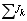

—истема уравнений, записанных по ћ”Ќ дл€ узловых напр€жений и узловых токов цепи без зависимых источников энергии и индуктивно св€занных ветвей, может быть представлена в виде произведени€ квадратной матрицы узловых и межузловых проводимостей [G] на столбцовую матрицу узловых напр€жений [U”] и матрицы узловых токов [J”]:
ћатричное уравнение (2.25) может быть решено относительно матрицы узловых напр€жений [U”] путем умножени€ обеих сторон урав≠нени€ на матрицу [G]- 1 , обратную матрице проводимостей [G], т. е.
| |
| “ак как произведени€ и то матрица узловых напр€жений |
или в развернутом виде:
где - алгебраические дополнени€ элементов квадратной матрицы проводимостей [G]. |
¬нимание! |
1. ѕеред составлением матричного уравнени€ узловых напр€жений целесообразно источники напр€жени€ преобразовать в источники тока. |
2. ¬ случае, если цепь содержит непреобразованные источники напр€жени€ и источники тока, то элементы матрицы узловых токов [J”] рассчитывают следующим образом: |
| , |
где  - алгебраическа€ сумма токов источников тока, подключенных к рассматриваемому узлу. |
“оки Jk записывают в сумме со знаком плюс (минус), если они направлены к k-му узлу (от узла); - алгебраическа€ сумма произведений Ёƒ— ветвей, сход€щихс€ в k-м узле, на проводимости этих ветвей. —лагаемое записываетс€ со знаком плюс (минус), если Ёƒ— направлена к узлу (от узла). |
|
| |
|